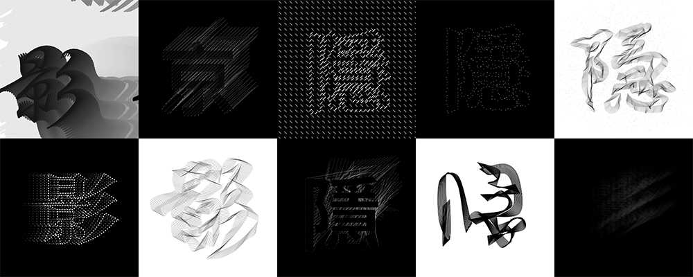

An interactive typography project with three chinese character. The colors are simply black and white since all these characters have silent, secret, and subtle feelings. Utilize the algorithm of trigonometry and perlin noise.
Move around mouse to see variable changes in each character.
"影" - "picture; image; film; movie; photograph; reflection; shadow; trace"
"丝" - "silk; thread; trace; (cuisine) shreds or julienne strips; classifier: a thread (of cloud, smoke etc),
a bit, an iota, a hint (of sth) etc"
"隐" - "secret; hidden; concealed; (prefix) crypto-"
The character's movement is related to trigonometry. Mouse position is interacting to the opacity and the color of the text. The trace of the text will create a moving path resembles shadows.
Move the mouse to interact with the text, making the text have a fluid and dynamic movement like fabric. The lines assemble the text imitate the form of thread and strip.
Using noise to create generative flow field around the text. The mouse position is related to the opacity of the text and the length of the flow field. When moving mouse to the top left corner, the character will be completely invisible like it is concealed.
Some iterations during the design process, exploring different approachs and aesthetical aspects according to the meanings of those characters.

Type in text and submit to try this effect on your own text.
Move mouse around to see the effect.
Press s key to save the canvas.